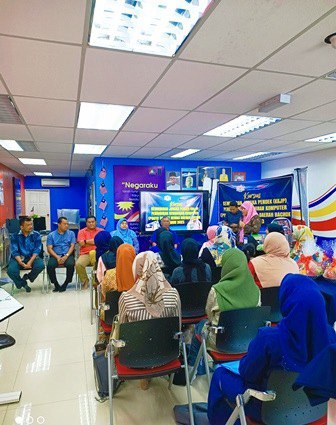
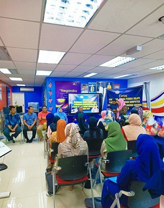
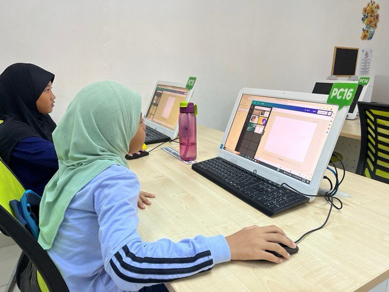
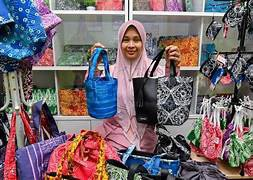
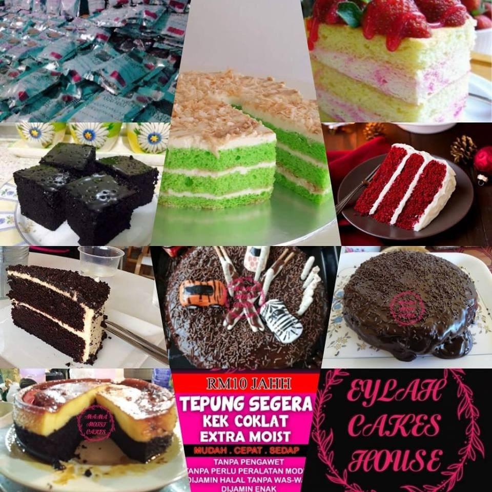
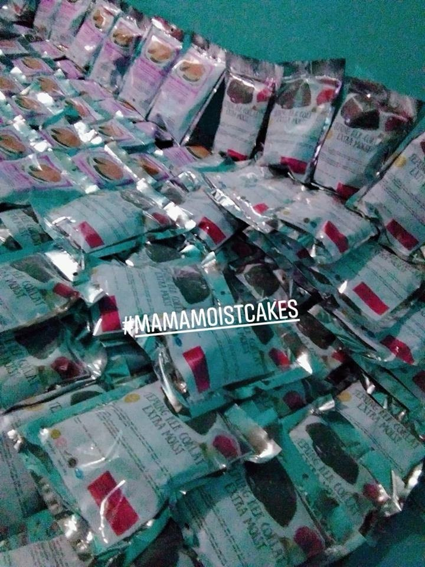

About Melawi
According to the stories of the local elders here, the name Melawi originated from a warrior who possessed very high-level martial arts and spiritual knowledge. He was said to be of royal warrior descent and came from a region in Indonesia known as Kabupaten (District) Melawi. This district emerged from the confluence of three rivers: the Kayan River, the Melawi River, and the Pinoh River. There was a power struggle among the leaders there, as each was influenced by greed and the temptations of the Devil. However, this warrior did not want to get involved in the dispute and chose his own path, eventually arriving at a place now known as Melawi.
Geographical
Location of Bachok
Bachok, an Islamic Tourism Town, is situated facing the South China Sea. As it is located in a coastal area, much of its terrain is low and flat, with sandy and clay soil compositions. The low-lying areas that are prone to flooding are in the Repek and Gunong districts. The soil in these areas is of the acidic type. The Kemasin River is the main river and its branches span the entire council area. The highland areas consist of hilly terrain, particularly in Bukit Gunong.
Population
According to 2007 statistics, the population of the Bachok District Council area is 131,753 people.
Economy
Melawi Bachok, Kelantan Digital Economy Center (PEDi)
 

PEDi is a program organized by the Malaysian Ministry of Communications and Digital (KKD) in collaboration with TM Bhd and MSD Digital Intelligence. It aims to bridge the digital divide among the local community. A total of 911 PEDi centers have been established across Malaysia to bring the community closer to the use of computers and information and communication technology (ICT) applications in their daily lives.
PEDi Roles
• Provides collective internet access to communities with limited broadband.
• Enables local community participation in ICT-based courses and training.
• Promotes digital creation, dissemination, and mastery of digital knowledge.
• Increases community awareness and involvement to improve socioeconomic status.
• Guides and develops micro-entrepreneurs using digital technology.
Batik Entrepreneur

Beg Ngesong
Kelantan batik attire, featuring crab apple and butterfly pea flowers, is a popular handicraft in Cik Siti Wan Kembang. These motifs are also used in ties and tablecloths. 15 women from villages around Jelawat and Gunong have created a unique variation by producing bags with Kelantan batik motifs. The project manager of the 'ngesong bag,' Rozana Mat Radzi, 44, said the production began during the Movement Control Order (MCO) period, as they sought alternative income sources. The unique variation of Kelantan batik bags is a testament to the potential of handicraft products.
Instant Cake Flour Enterprise
 Nor Shailah Zolihan, aged 20, who lives in Kampung Pantai Melawi, Bachok, Kelantan, is an instant cake flour entrepreneur. She has been running this business for the past 2 years, and the details of her business are as follows:
Business Name: Eylah Cakes House
Type of Business: Selling Various Types of Cakes & Instant Cake Flour
Business Address: Kg Pantai Melawi 16300 Bachok, Kelantan
Phone Number: 019-9182830
"Bumiputera-produced budu"
Hamidah, a budu producer from Kampung Hujung Repek, Bachok, Kelantan, has been in the industry for 18 years. Starting with an initial capital of RM12,000. The secret to producing high-quality budu lies in fermentation period, cooking method, and ingredients. Hamidah's company produces two types: original taste budu without added flavoring and regular budu. With a production rate of up to 24,000 bottles per month, the business supports the family's dream of owning a car and house.
Karipap Pusing Mocnaq